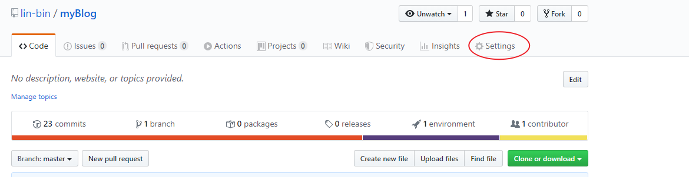
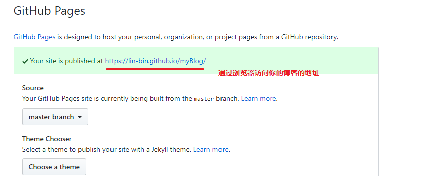

Hexo
Hexo 是一个快速、简洁且高效的博客框架。Hexo 使用 Markdown 解析文章，在几秒内，即可利用靓丽的主题生成静态网页。
hexo 安装
首先确保电脑已经安装了 nodejs 和 git，如果没有安装请先安装后再执行以下操作。
npm install hexo-cli -g # 脚手架
hexo init myBlog # 创建项目，myBlog为项目名，可自定义
cd myBlog # 进入目录
npm install # 安装依赖基本结构
├── _config.yml # 网站的配置文件
├── package.json # 应用程序的信息
├── scaffolds # 通用的 markdown 模板
├── source # 存放用户资源的地方
├── _drafts # 草稿文件
└── _posts # 发布的文章
└── themes # 博客的模板使用主题
hexo 有非常丰富的第三方主题，可以快速帮助我们搭建功能强大的博客网站：
第一步、下载主题模板 点击这里获取主题模板；
第二步、将下载的模板解压到 themes 目录；
第三步、修改根目录下的 _config.yml 文件：
theme: 模板名字创建文章
在终端运行以下命令：
hexo new <title>这样在根目录下的 source/_posts 目录下就会生成一个 .md 的文件了，然后就可以直接进行编辑。_或者直接在 _posts 目录下新建 markdown 文件编辑，在 _drafts 目录新建 markdown 文件，就是草稿。
运行 hexo 进行预览
# 生成静态文件并监视文件变动，可简写： hexo g
hexo generate -w
hexo server // 启动服务器，可简写：hexo s
# 调试模式
hexo s --debughexo 配置到 github 上
先安装 git 插件
npm install hexo-deployer-git --save
配置 git ，修改根目录下的 _config.yml 文件:
deploy:
type: git
repository: https://github.com/lin-bin/myBlog.git # github仓库地址
branch: master推送到 github
# 清除缓存文件（db.json）和已生成的静态文件（public）
hexo clean
# 生成静态文件
hexo generate # 简写为 hexo g
# 然后部署到 github 上
hexo deploy # 简写为：hexo d
# 或者以上两步直接替换为
hexo generate -dgithub 配置
进入 github 仓库，选择 Settings

设置 GitHub Pages
